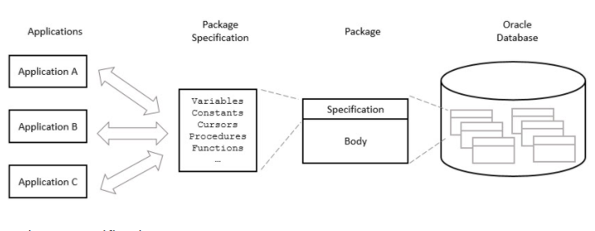

Tiếp tục chuỗi seri 100 ngày cho việc làm chủ csdl oracle. Thường thì khi làm trong 1 dự án bạn sẽ có rất ít thời gian để tìm hiểu chi tiết từng section đã chỉ ra ở phần 1: Làm quen với oracle.
Bằng những kinh nghiệm với SQL server, làm sao thể lấy dữ liệu, tìm kiếm dữ liệu với các điều kiện logic, phân trang dữ liệu, ràng buộc và các liên kết với các bảng dữ liệu,... chúng ta sẽ bắt tay vào làm việc với thử thách đầu tiên là thử viết 1 PL/SQL package, bên trong PL/SQL package đơn giản là nó bao gồm các thủ tục, các function nhỏ. Một package CRUD cơ bản bao gồm các nhiệm vụ sau: thêm, sửa, xóa, Get 1 dữ liệu, Get nhiều dữ liệu, get dữ liệu theo điều kiện ABCD, phân trang dữ liệu,...
Nói lại 1 chút về khái niệm, Trong PL/SQL, 1 package là một schema objects chứa hoặc định nghĩa cho một nhóm các chức năng nhất định. Một package bao gồm các variables, constants, cursors, exceptions, procedures, functions, và một số chương trình nhỏ. Nó được biên dịch (complied) và lưu trữ (stored) trong cơ sở dữ liệu Oracle. Thông thường một package thường có 2 phần là specification và phần body. Bạn có thể hình dung giống như Reponsitory pattern khi bạn khai báo 1 interface và sau đó là bạn implementations cho interface đó.
Có thể xem hình sau cho dễ hiểu nhé: 
- Phần specification: Phần này chỉ rõ ra những function bạn sẽ định nghĩa trong package. - Phần Body hay còn gọi là phần thân, phần này bạn sẽ implements đầy đủ các function trong package.
Ví dụ về phần thân của 1 function là CREATE, thông thường sẽ bao gồm 3, hoặc 4 phần:
Sau khi khai báo xong 1 package, bạn sẽ tự suy nghĩ trong đầu là làm sao để sử dụng nó, muốn sử dụng nó thì bạn phải lưu lại package vào trong oracle db. Bạn lưu lại package bằng cách biên dịch nó. THường bạn sẽ biên dịch phần specification trước sau đó đến phần body. Trong quá trình complied code có thể nó sẽ có 1 vài lỗi, bạn chịu khó đọc mô tả và làm theo là được. Phần này để bạn tự thực hành để hiểu hơn.
Đó là cơ bản những gì về 1 package trong oracle db. Ngoài ra bạn muốn tìm hiểu sâu hơn về các lý do tại sao lại cần đên package tại đây.
Nói đến đây sẽ có 1 vài phần bạn chưa hình dung ra, Mình sẽ đi vào chi tiết từng phần ở những bài tiếp theo.
Nội dung bài tiếp theo mình sẽ nói về thằng PL/SQL CURSORS. Rất mong nhận được ủng hộ.